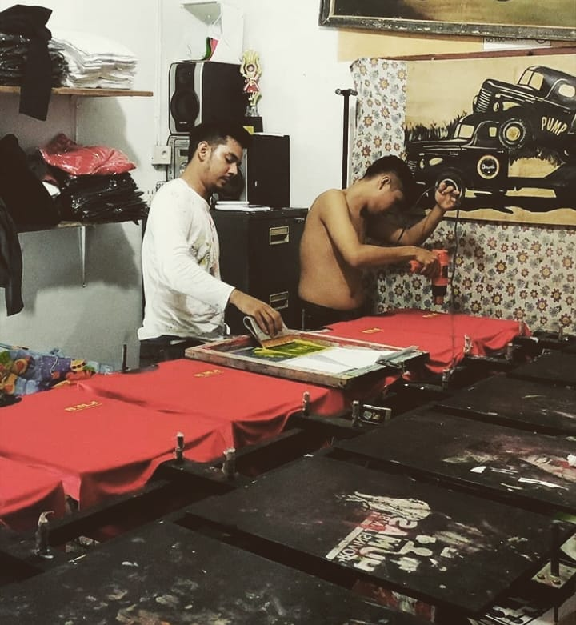

Berawal dari dapur kecil untuk menjadi tempat produksi, kami tumbuh karena satu hal yaitu orang ingin hasil cetak yang rapi tanpa harus memahami semua istilah teknisnya.
“Bikin pesanan cetak seharusnya terasa mudah.”
Dapur Sablon berdiri pada 2018 untuk membantu bisnis kecil, komunitas, dan kreator membuat kebutuhan visual yang bisa langsung dipakai. Kami mengerjakan sablon kaos, kartu nama, brosur, flyer, stiker, label, dan kebutuhan branding lainnya.
Kami percaya kualitas bukan hanya soal hasil warna. Kualitas juga berarti brief tidak hilang di tengah jalan, estimasi tidak dibuat samar, dan pelanggan tahu apa yang akan diproduksi sebelum menyetujui.
Tahun Mulai Melayani
Bisnis dan Komunitas
Rata-rata Kepuasan
Rata-rata waktu produksi